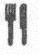

89. BÖLÜM
Katedral Koleji, Ulusal Katedral’e komşu, zarif ve şato benzeri bir yapıdır. Washington’ın ilk piskoposu tarafından tasarlanan Vaizler Koleji, papazlığa atandıktan sonra din görevlilerinin eğitimlerine devam edebilmeleri için kurulmuştu. Bugün bu kolej ilahiyat, evrensel adalet, şifa ve maneviyat konularında geniş çaplı bir eğitim programı sunmaktadır.
Langdon ile Katherine, projektörleriyle geceyi gündüze çeviren helikopter yeniden havalanırken çimenlerden karşı tarafa koşup, Galloway’ın anahtarını kullanarak içeri girmeyi başarmışlardı. Giriş salonunda nefes nefese dururken, etraflarını incelediler. Pencerelerden içeri yeteri kadar ışık giriyordu, bu yüzden Langdon ışıkları açıp, helikoptere bulundukları yeri gösterme riskini göze alamadı. Ana koridordan yürürken, bir dizi konferans salonunun, sınıfın ve oturma alanının önünden geçtiler. İçerisi Langdon’a Yale’in -yoğun yaya trafiğine dayanması için kendi dönemine ait inceliği güçlendirilmiş, dışarıdan bakıldığında nefes kesici, içeridense kullanışlı- Neo-Gotik binalarını anımsatmıştı.
Koridorun bittiği yeri gösteren Katherine, “Buradan,” dedi.
Katherine piramitle ilgili yeni tahminini Langdon’la henüz paylaşmamıştı ama buna Isaacus Neutonuus isminin geçmesinin sebep olduğu belliydi. Çimenlerin üstünden geçerken tek söylediği, piramidi basit bir bilim kullanarak değiştirebileceğiydi. İhtiyacı olan her şeyi bu binada bulabileceğine inanıyordu. Langdon, Katherine’in neye ihtiyacı olduğunu veya granit ya da altından bir nesneyi nasıl dönüştürmeyi planladığını bilmiyordu ama küpün Gül Haç’a dönüştüğünü gördükten sonra, ona inanmaya hazırdı.
Koridorun sonuna geldiklerinde, istediği şeyi göremediği anlaşılan Katherine somurttu. “Bu binada yurtların da olduğunu söylemiştin, öyle değil mi?”
“Evet, uzun süreli konferanslar için.”
“O halde bir yerlerde mutfak olmalı, öyle değil mi?”
“Acıktın mı?”
Kaşlarını çatarak ona baktı. “Hayır, bir laboratuvara ihtiyacım var.” Elbette öyle. Langdon, umut vaat eden bir sembolün bulunduğu, aşağı inen merdiveni fark etti. Amerika’nın en sevdiği piktogram.

Bodrumdaki mutfak, büyük gruplara yemek pişirmek için tasarlanmış, sanayi tipi -bol miktarda paslanmaz çelik ve büyük kâseler- bir yerdi. Katherine kapıyı kapatıp ışıkları açtı. Aspiratörler hemen çalışmaya başladı.
Aradığı her neyse, hemen dolapların içini karıştırmaya koyuldu. “Robert, piramidi tezgâhın üstüne koyar mısın?”
Kendini Daniel Boulud’dan{78} emir alan toy bir aşçı yamağı gibi hisseden Langdon, piramidi çantasından çıkarıp, üstüne altın kapak taşını yerleştirerek Katherine’in isteğini yerine getirdi. İşini bitirdiğinde, Katherine büyük bir tencereye sıcak su dolduruyordu.
“Şunu lütfen ocağın üstüne koyar mısın?”
Katherine ocağı yakarken Langdon, etrafa su sıçratan tencereyi ocağın üstüne koydu.
Ümit dolu bir sesle, “Istakoz mu pişireceğiz?” diye sordu.
“Çok komik. Hayır, simya yapıyoruz. Ve aklında bulunsun, bu bir makarna tenceresi, ıstakoz tenceresi değil.” Tencerenin içinden çıkardığı delikli süzgeci işaret etti ve sonra tezgâhta duran piramidin yanına koydu.
Çok aptalım. “Peki makarna pişirmek piramidi deşifre etmemize yarayacak mı?”
Onun yaptığı yorumu duymazdan gelen Katherine ciddi bir sesle konuştu. “Masonların otuz üçüncü dereceyi en üst derece olarak seçmelerinin hem tarihi, hem de sembolik bir sebebi olduğunu eminim biliyorsundur.”
Langdon, “Elbette,” dedi. İsa’dan altı yüzyıl önce, Pisagor döneminde 33 sayısı numeroloji geleneğinde tüm sayıların üstü sayılırdı. İlahi Gerçek’i simgeleyen en kutsal figürdü. Bu gelenek, masonların ve başkalarının arasında devam etmişti. Hiçbir tarihi kanıt bulunmasa da, Hıristiyanların İsa’nın otuz üç yaşında çarmıha gerildiğini düşünmeleri boşuna değildi. Benzer şekilde, Yusuf’un Bakire Meryem’le otuz üç yaşındayken evlenmesi, İsa’nın otuz üç mucize gerçekleştirmesi, Yaradılış’ta Tanrı’nın isminin otuz üç defa geçmesi veya İslamiyette cennet sakinlerinin otuz üç yaşında olmaları da tesadüf değildi.
Katherine, “Otuz üç pek çok gizem geleneğinde kutsal bir sayıdır,” dedi. “Doğru.” Langdon hâlâ bunun makarna tenceresiyle ne ilgisi olduğunu anlayamıyordu.
“Bu yüzden. Newton gibi eski bir simyacı, Gül Haçlı ve gizemcinin otuz üç sayısının özel olduğunu düşünmesi senin için şaşırtıcı olmaz.”
Langdon, “Öyle olduğuna eminim,” dedi. “Newton numeroloji, kehanet ve astrolojiyle yakından ilgiliydi ama ne...”
“Her şey otuz üçüncü derecede açığa çıkacak.”
Langdon, Peter’ın yüzüğünü cebinden çıkarıp yazıyı okudu. Sonra su dolu tencereye baktı. “Üzgünüm, bir şey anlamıyorum.”
“Robert, bu akşam başlangıçta hepimiz otuz üçün masonik bir derece olduğunu düşündük ama yüzüğü otuz üç derece çevirdiğimizde küp şekil değiştirerek bir haça dönüştü. O anda, derece kelimesinin farklı bir anlamda kullanıldığını anladık.”
“Eve.. Açı derecesi.”
“Kesinlikle. Ama derecenin üçüncü bir anlamı daha var.”
Langdon ocaktaki tencereye bir göz attı. “Isı.”
Katherine, “Kesinlikle!” dedi. “Bütün akşam gözümüzün önündeydi. ‘Her şey otuz üçüncü derecede açığa çıkacak.’ Bu piramidin ısısını otuz üç dereceye getirebilirsek... bize bir şey açıklayacak.”
Langdon, Katherine Solomon’ın son derece zeki biri olduğunu biliyordu, ama çok belirgin bir noktayı atlıyor gibiydi. “Yanılmıyorsam otuz üç fahrenhayt ölçeğinde dondurucu soğuk anlamına gelir. Piramidi buzdolabına koymamız gerekmez miydi?”
Katherine gülümsedi. “Eğer kâğıtlarını Jeova Sanctus Unus diye imzalayan büyük simyacı ve Gül Haç gizemcisinin tarifine uyacaksak, hayır.” Isaacus Neutonuus yemek tarifi mi yazıyordu?
“Robert, ısı en temel simya öğesidir ve her zaman Fahrenhayt ya da Santigrat olarak ölçülmez. Çok daha eski ısı birimleri vardır, bunlardan biri de Isaac...”
Katherine’in haklı olduğunu fark eden Langdon, “Newton Sıcaklık Birimi!” dedi.
“Evet! Isaac Newton, sıcaklığı ölçmek için tamamıyla doğal fenomenler üzerine kurulu bir sistem icat etmişti. Newton’in başlangıç noktası buzun erime ısısıydı ve buna ‘sıfırıncı derece’ demişti.” Duraksadı. “Sanırım suyun kaynama ısısına hangi dereceyi uygun gördüğünü tahmin edebilirsin, tüm simya işlemlerinin kralına?”
“Otuz üç.”
“Evet otuz üç! Otuz üçüncü derece. Newton Sıcaklık Birimi’nde suyun kaynama noktası otuz üç derecedir. Bir keresinde ağabeyime Newton’ın neden bu sayıyı seçtiğini sorduğumu hatırlıyorum. Bana çok sıradan gelmişti. Suyun kaynaması en temel simya işlemidir ama o otuz üçü seçmişti. Neden yüz değil? Neden daha şık bir sayı değil? Peter bana, Newton gibi bir gizemci için otuz üçten daha şık bir sayı olmadığını söylemişti.”
Her şey otuz üçüncü derecede açığa çıkacak. Langdon önce su dolu tencereye, sonra da piramide baktı. “Katherine, piramit saf granit ve saf altından yapılmış. Sence su kaynatmak onu dönüştürmek için yeterli ısıyı sağlayacak mı?”
Katherine’in yüzündeki gülümseme, Langdon’ın bilmediği bir şey bildiğini ima ediyordu. Kendinden emin bir şekilde tezgâha yürüdü, altın kapaklı granit piramidi kaldırdı ve süzgecin içine koydu. Ardından dikkatle kaynayan suyun içine daldırdı. “Bir bakalım, ne olacak?”
Ulusal Katedral’in üstündeki CIA pilotu, helikopteri otomatik dengelemeye bağladı ve binanın çevresini teftişe çıktı. Hiç hareket yok. Termal görüntüleme sistemi, katedralin taş duvarlarının içini göremiyordu, bu yüzden ekibin içeride ne yaptığını bilemiyordu ama birisi dışarıya kaçacak olursa, termal görüntüleme onu yakalayacaktı.
Altmış saniye sonra termal sensörden ses geldi. Ev güvenliği sistemleriyle aynı prensiple çalışan dedektör, güçlü bir ısı farkı tespit etmişti. Genellikle bu, soğuk bir yerde hareket eden insan varlığına işaret ederdi, ama ekranda görülen, daha çok bir ısı bulutuna, çimenlerin üstünde yüzen bir sıcak hava kümesine benziyordu. Pilot, kaynağı bulmuştu. Katedral Koleji’nin yan tarafında çalışan bir aspiratörden geliyordu.
Herhalde önemli bir şey değildir, diye düşündü. Bu türden değişimleri hep görürdü. Birisi yemek pişiriyor ya da çamaşır yıkıyor. Ama tam döneceği sırada, tuhaf bir şey fark etti. Garajda hiç araba yoktu ve binada hiç ışık yanmıyordu.
UH-60'ın görüntüleme sistemini uzunca bir süre inceledi. Ardından takım liderine telsizle haber verdi. “Simkins, önemli bir şey olmayabilir, ama...”
“Akkor ısı göstergesi!” Langdon bunun zekice olduğunu kabul etmek zorundaydı.
Katherine, “Bu çok basit bir bilim,” dedi. “Farklı maddeler farklı ısılarda akkor hale gelir. Buna termal gösterge deriz. Bilimde bu göstergeler hep kullanılır.”
Langdon bakışlarını suyun içindeki piramitle kapak taşına çevirdi. Fokurdayan suyun üstünde ince bir buhar bulutu belirmeye başlamıştı, ama o pek de ümitli değildi. Saatine bakınca kalbi hızlandı: 23.45. “Isınınca burada bir şeyin parlayacağına mı inanıyorsun?”
“Parlamayacak Robert. Akkor hale gelecek. Arada büyük fark var. Akkor durumuna sıcaklık sebep olur ve belirli bir ısıda meydana gelir. Mesela çelik üreticileri ısıl işlem sırasında çubuklara, belirli bir sıcaklıkta akkor hale gelen şeffaf bir tabaka püskürtürler, böylece çubukların ne zaman oluştuğunu anlarlar. Ruh halini gösteren yüzükleri düşün. Parmağına takarsın ve vücut ısına göre renk değiştirir.”
“Katherine bu piramit 1800’lerde yapılmıştı! Bir ustanın taş kutuya gizli menteşeler yerleştirmesini anlayabilirim ama bir tür şeffaf termal tabaka uygulamak?”
Suyun içindeki piramide umutla bakan Katherine, “Son derece uygun,” dedi. “Eski simyacılar termal gösterge olarak organik fosforu hep kullandılar. Çinliler renkli havai fişekler yaparlardı, hatta Mısırlılar...” Kaynayan suya dikkatle bakan Katherine, cümlesini bitirmeden durdu.
“Ne?” Onun bakışlarını takip eden Langdon da fokurdayan suya baktı ama bir şey göremedi.
Katherine eğilerek suya daha da yakından baktı. Birden arkasını dönüp, mutfağın karşı tarafındaki kapıya doğru koştu.
Langdon, “Nereye gidiyorsun?” diye bağırdı.
Mutfağın ışık düğmesinin yanında durup kapattı. Işıklar ve aspiratör kapanmış, içerisi koyu bir karanlık ve sessizliğe gömülmüştü. Langdon yeniden piramide dönüp, buharın arasından suyun içindeki kapak taşına baktı. Katherine yanına geldiğinde, Langdon’ın ağzı hayretten açık kalmıştı.
Metal kapak taşının küçük bir bölümü, tam da Katherine’in tahmin ettiği gibi suyun altında parlamaya başlamıştı. Belirmeye başlayan yazılar, su ısındıkça daha da parlaklaşıyordu.
Katherine, “Metin!” diye fısıldadı.
Sersemlemiş haldeki Langdon başını salladı. Kapak taşındaki yazıların hemen altında bazı kelimeler görünüyordu. Sadece üç kelime var gibiydi. Langdon henüz kelimeleri okuyamamıştı ama bu gece aradıkları şeyin perdesini kaldırıp kaldırmayacağını merak ediyordu. Galloway onlara, piramit gerçek bir harita ve gerçek bir yeri işaret ediyor, demişti.
Harfler daha da parlaklaştığında, Katherine ocağın altını kapattı, suyun fokurdaması artık kesilmişti. Şimdi kapak taşı, suyun dingin yüzeyinin altında görünüyordu.
Parlayan üç kelime net bir şekilde okunuyordu.